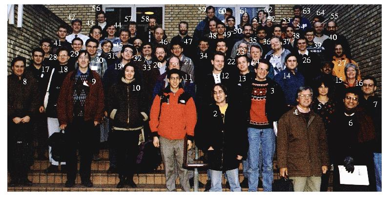

AQIP '98 Participants

Original picture: AQIP98dpi72.jpeg
1. Isaac Chuang (IBM)
2. Tal Mor (University of Montreal)
3. Robert Beals (University of Arizona)
4. Richard Jozsa (University of Plymouth)
5. Dorit Aharonov (The Hebrew University)
6. Umesh Vazirani (Univ. at California at Berkeley)
7. Amnon Ta-Shma (Int. Computer Science Institute)
8. Kevin Obenland (University of Southern California)
9. Udo Sprute (University of Bielefeld)
10. Barbara Terhal (IBM Thomas Watson Res. Center)
11. Charles Bennett (IBM Thomas Watson Res. Center)
12. Andreas Winter (University of Bielefeld)
13. Hein Röhrig (Max Planck-Institut für Informatik)
14. John Smolin (IBM Thomas Watson Res. Center)
15. Lov Grover (Lucent Technologies)
16. Karen Møller (BRICS)
17. Michele Mosca (Oxford University)
18. Peter Löber (University of Bielefeld)
19. Ronald de Wolf (CWI / University of Amsterdam)
20. Harry Buhrmann (CWI, Amsterdam)
21. Richard Cleve (University of Calgary)
22. Christian Cachin (MIT Lab. for Computer Science)
23. Andre Berthiaume (Depaul University)
24. John Rogers (Depaul University)
25. Helger Lipmaa (University of Tartu)
26. Ahto Buldas (Cybernetica Ltd.)
27. Louis Salvail (BRICS)
28. Jason Semitecolos (Oxford University, Dept. of Physics)
29. Thomas Hune (BRICS)
30. Stefan Dziembowski (BRICS)
31. Dagmar Bruss (Fondazione ISI, Villa Gualino)
32. G. Massimo Palma (Istituto di Fisica, Palermo)
33. Lance Fortnow (Univ. of Chicago)
34. Claude Crepeau (University of Montreal)
35. Peter Høyer (Odense University)
36. Alain Tapp (University of Montreal)
37. Mark Ettinger (Los Alamos National Laboratory)
38. John Watrous (University of Wisconsin)
39. Daniel Damian (BRICS)
40. Gudmund Frandsen (BRICS)
41. Marcin Jurdzinski (BRICS)
42. Rune Lyngsø (BRICS)
43. Bernd Grobauer (BRICS)
44. Niels Damgaard (BRICS)
45. Eugene Polzik (Inst. of Physics and Astronomy)
46. Rusins Freivalds (University of Latvia)
47. Ivan Damgård (BRICS)
48. Adrian Kent (DAMTP, University of Cambridge)
49. David Biron (The Hebrew University)
50. Sandro Wimberger (University of Oxford)
51. Dominique Mayers (Princeton University)
52. Gianfranco Mascari (Italian National Research Council)
53. Gilles Brassard (University of Montreal)
54. Markus Grassl (University of Karlsruhe)
55. Olivier Danvy (BRICS)
56. Juris Smotrovs (University of Latvia)
57. Theis Rauhe (BRICS)
58. Jiri Vala (The Hebrew University)
59. Norbert Luetkenhaus (Helsinki Institute of Physics)
60. Michael Drewsen (Inst. of Physics and Astronomy, University of Aarhus)
61. Liv Hornekær (Inst. of Physics and Astronomy, University of Aarhus)
62. Klaus Mølmer (Inst. of Physics and Astronomy, University of Aarhus)
63. Anders Sørensen (Inst. of Physics and Astronomy, University of Aarhus)
64. Christian Schori (KVI / Inst. of Physics and Astronomy, University of Aarhus)
{kind=link}